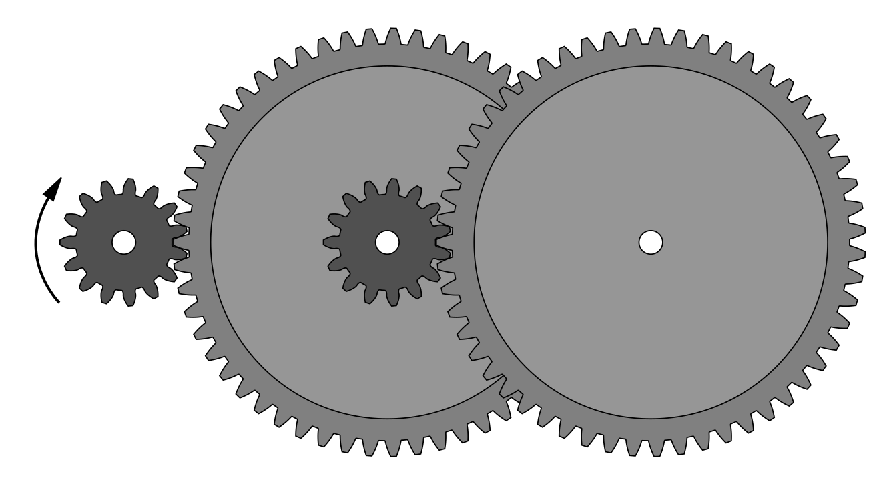

Gears¶
A gear system is a mechanism made up of two or more toothed wheels that mesh together. Its main function is to transmit rotational motion and to change rotational speed and torque.
When the wheels are different sizes, the larger wheel is called the gear wheel, and the smaller one is called the pinion.

Gear wheel and pinion with arrows showing the direction of rotation.¶
Table of contents:
Applications¶
One of the most important applications of gears is changing rotational speed from a motor, which is usually fast and has low torque, to a system that must perform work, usually slower and with higher torque.
For example, in a car, gears transform the high speed of the engine (which rotates very fast with little torque) into a lower speed but with greater torque to move the wheels.
Torque¶
Torque is the rotational force acting on a shaft.
The term pushing force is usually used for forces acting in a straight line. In the case of rotating shafts, torque can be imagined as the force that would need to be applied with a one-meter-long lever to obtain the same rotational effect.
For example, if a car engine has a torque of 250 newton-meters, it is as if we were pushing a rotating shaft with a one-meter-long lever using a force of 250 newtons (about 25 kilograms of force).
Gears can increase torque (rotational force), but when they do so, speed decreases.
In the same way, if a gear increases speed, torque decreases by the same ratio.
This happens in all mechanisms that transform motion: if we gain force, we lose speed, and vice versa.
Gear calculations¶
The rotational speed of each toothed wheel in a gear system depends on the number of teeth it has.
The relationship between the two wheels can be calculated using this formula:
Where:
Z1 = Number of teeth of the first gear
N1 = Rotational speed of the first gear
Z2 = Number of teeth of the second gear
N2 = Rotational speed of the second gear
This means that the number of teeth of a gear multiplied by its rotational speed is the same for all gears in the system.
Rotational speed is usually measured in revolutions per minute, also written as rpm, which means the number of complete turns the wheel makes in one minute. A typical motor usually has a rotational speed in a range from 600 rpm to 6000 rpm.
Wind turbine exercise¶
We want to calculate a gear system that multiplies the rotational speed of a wind turbine shaft.
The blades of a wind turbine rotate at a speed of 20 rpm, but the electric generator needs to rotate at 1000 rpm. If the pinion connected to the generator has 15 teeth, how many teeth will the gear wheel connected to the blades have?
The first step is to write down the data from the problem:
Next, we write the formula and substitute the known values:
Finally, we solve the equation and calculate the value of the unknown:
In practice, when the ratio between the numbers of teeth is so large, a gear train with more than two wheels connected together is usually used to reduce or increase rotational speed in several stages.
{kind=link}

Gear train that greatly reduces the rotational speed of the pinion¶
Electric car exercise¶
An electric car has the motor connected to the wheels through a reduction gear. We know that the maximum motor speed is 9000 rpm and that the maximum wheel speed is 1500 rpm. If the smallest gear must have 8 or more teeth, how many teeth should each gear have?
This exercise allows several valid solutions because the size of the pinion is not specified.
The first step is to write down the data from the problem. The motor is connected to the first gear and the wheels to the second gear.

Gear 1, connected to the motor, rotates faster and is therefore the smaller of the two gears. Now we choose a size for this small gear that is equal to or greater than 8 teeth:
Next, we write the formula and substitute the known values:
Finally, we solve the equation and calculate the value of the unknown:

The number of teeth of the second gear connected to the wheel will be 60 teeth.
Exercises¶
- What is a gear? What is its function?
- What are the different types of gears called, and what distinguishes them?
- What is one of the most important applications of gears?
- What is torque and in what units is it measured?
- What is the relationship between speed and torque in a gear system?
- An electric drill has a motor that rotates at 12,000 rpm. Using a reduction gear, the drill bit is required to rotate at 3,000 rpm. If the pinion connected to the motor has 12 teeth, how many teeth must the gear wheel connected to the drill bit have?
- An industrial conveyor belt is driven by a motor that rotates at 1,800 rpm. The belt must rotate at 300 rpm. If the gear wheel connected to the belt has 72 teeth, how many teeth must the pinion connected to the motor have?
- In a stationary bicycle, the pedal shaft rotates at 60 rpm and is connected by gears to the flywheel, which rotates at 360 rpm. If the pedal gear has 40 teeth, how many teeth does the flywheel gear have?
- In a mechanical clock, one gear rotates at 120 rpm and drives another gear that rotates at 10 rpm. If the fast gear has 12 teeth, how many teeth does the slow gear have?
- An industrial fan uses a motor that rotates at 3,000 rpm. To reduce noise, the fan shaft must rotate at 750 rpm. If the motor gear must have between 12 and 20 teeth, how many teeth must the fan gear have?
- An electric motor rotates at a speed of 1,800 rpm and is connected by gears to a secondary shaft. The motor gear has 12 teeth and the secondary shaft gear has 48 teeth. At what speed does the secondary shaft rotate?
- In a machine tool, one shaft rotates at 600 rpm and transmits motion to another shaft through gears. The first gear has 30 teeth and the second gear has 15 teeth. What is the rotational speed of the second shaft?
- A reduction system is made up of two gears. The input gear rotates at 3,000 rpm and has 20 teeth. The output gear has 80 teeth. At what speed does the output gear rotate?
- An industrial mixer uses a motor that rotates at 1,200 rpm. The motor is connected to the blades by a reduction gear. The motor gear has 16 teeth and the blade gear has 64 teeth. What is the rotational speed of the blades?
Unidad imprimible¶
Unidad en formato imprimible, con preguntas.